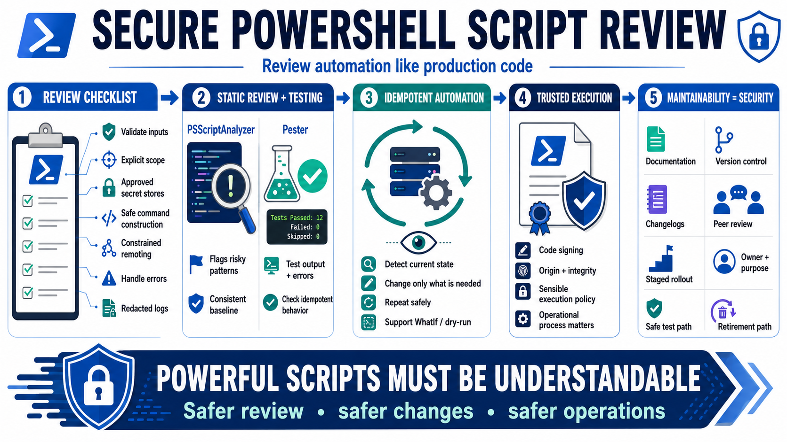

Testing, Review, and Maintainability
Connecting to LMS... Progress: in progress

Narration
Secure PowerShell scripts should be reviewed like production code. A review checklist can ask whether inputs are validated, broad operations require explicit scope, secrets are handled through approved stores, commands are constructed safely, remoting is constrained, errors are handled, and logs avoid sensitive data. The goal is not bureaucracy. The goal is to catch risky assumptions before a script runs with real authority.
PSScriptAnalyzer can support static review for style, quality, and potential issues. It will not understand every business rule, but it can flag patterns worth inspecting and help teams maintain a consistent baseline. Pester supports testing PowerShell code behavior, including parameter validation, expected output, error paths, and idempotent behavior. Tests are especially useful for administrative scripts because operators may not have a safe way to experiment in production.
Idempotent automation is easier to operate safely. A script should generally detect current state and make only the needed change, rather than blindly applying actions every time it runs. Dry-run or WhatIf support is valuable for scripts that modify systems because it lets an operator see intended changes before applying them. Code signing can add assurance about script origin and integrity when it is paired with a sensible execution policy and operational process.
Maintainability is a security feature. Clear documentation, version control, changelogs, peer review, and staged rollout all reduce the chance that an emergency script becomes a permanent hidden dependency. Administrative automation should have an owner, a purpose, a safe way to test changes, and a path for retirement. The more powerful a script is, the more important it is to make it understandable.